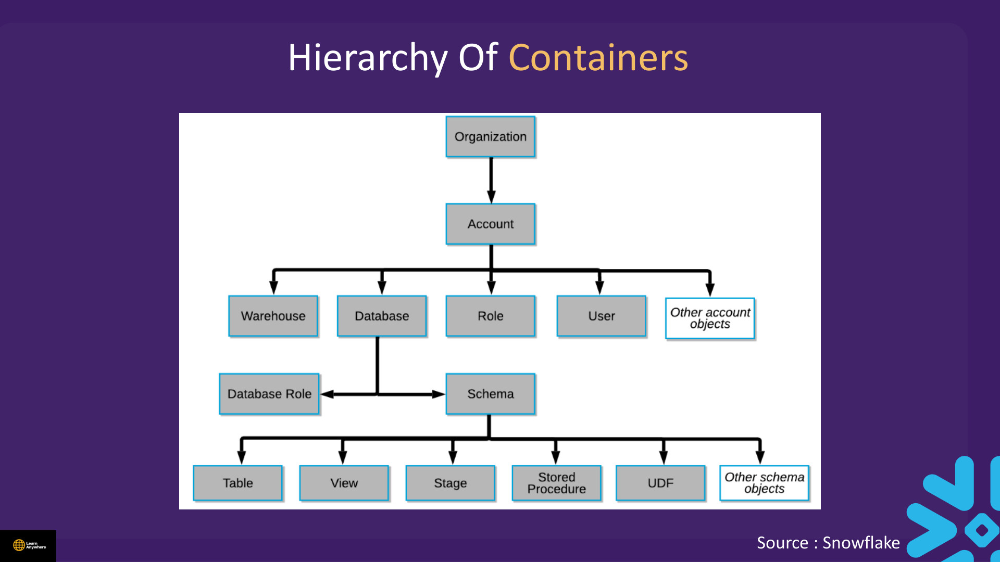
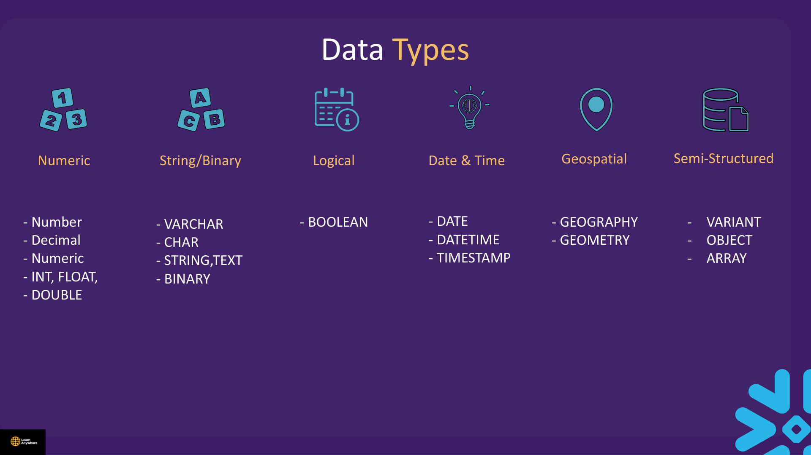
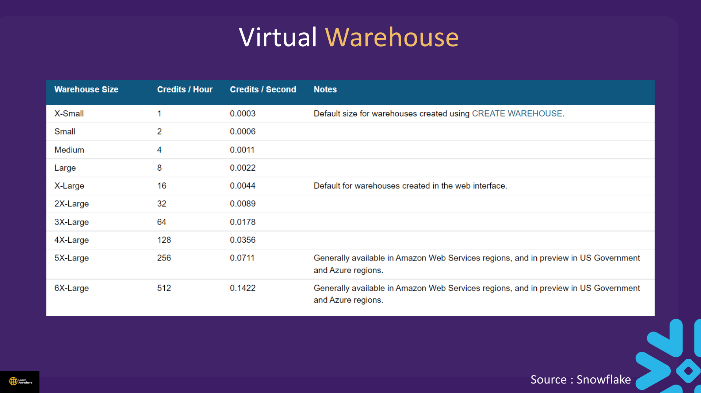
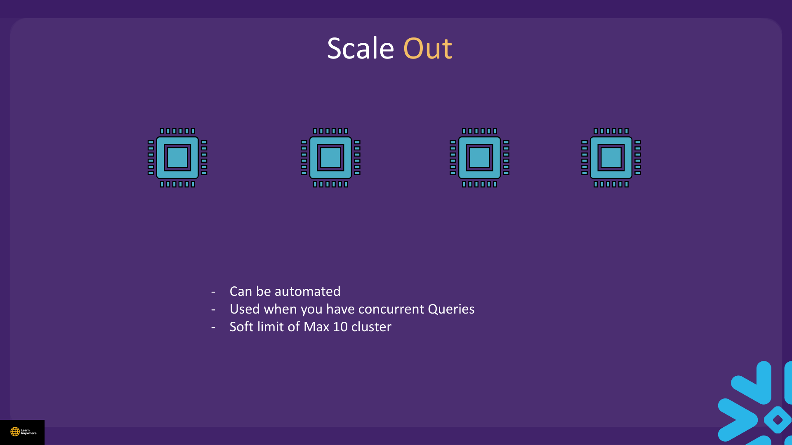
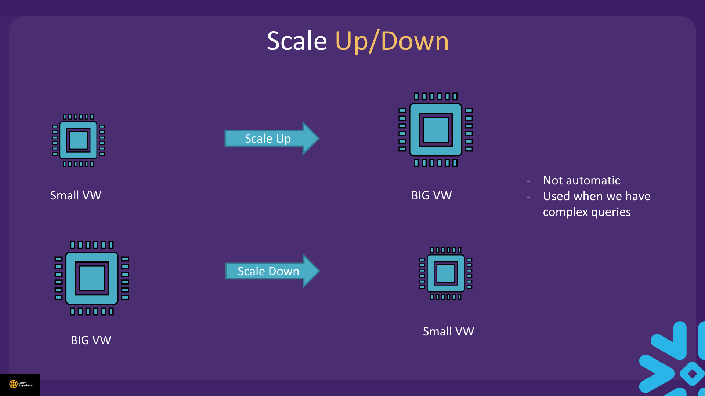
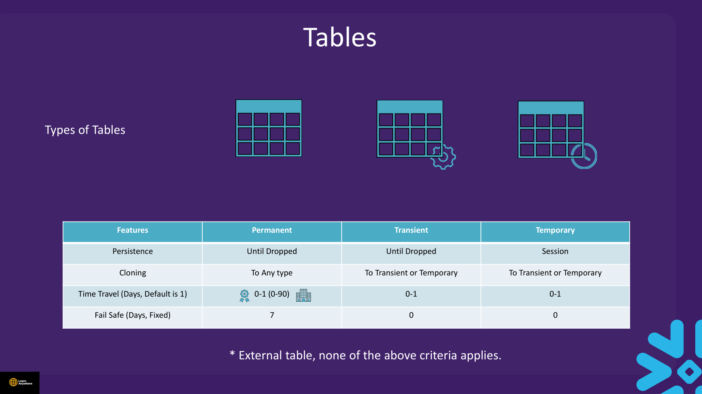

Lectures in this section
Every lecture below links to the notes that cover it.
- Snowflake Sign-Up 2:19
- Snowflake WalkThrough 8:24
- Note on Warehouse 0:14
- Demo : First Snowflake Code 8:46 1. Basic Concepts/First Code.txt
- New UI Update 2:40
- Demo : Create Warehouse 11:52 1. Basic Concepts/Warehouse.txt
- Concept of Scaling Out and Scaling Up/Down 6:10
- Types of Tables 6:09
- Demo : Types of Tables 10:32 1. Basic Concepts/Table Type.txt
- Note 0:04
- Basic Concepts Quiz
Snowflake Sign-Up
Create a free trial at snowflake.com. You choose a cloud provider (AWS, Azure, or GCP), a region, and an account identifier. Trials typically run on Enterprise edition so you can explore multi-cluster warehouses and extended Time Travel.
- Account URL:
https://<orgname>-<account_name>.snowflakecomputing.com(or legacy locator format). - Initial role:
ACCOUNTADMINfor the account owner; createSYSADMINfor day-to-day object management in labs. - Credits: Trial credits expire after 30 days or when consumed — suspend warehouses aggressively.
ACCOUNTADMIN for daily SQL work. Grant yourself SYSADMIN and use that role in worksheets.
Snowflake WalkThrough
Snowsight is Snowflake's modern web interface. You can also connect via SnowSQL (legacy CLI), the Snowflake CLI, JDBC/ODBC drivers, or Python connectors — but Snowsight is where most beginners start.
| Area | Purpose |
|---|---|
| Projects / Worksheets | Write and run SQL. Each worksheet remembers role, warehouse, database, and schema context. |
| Data → Databases | Browse the object tree: databases, schemas, tables, views, stages, pipes. |
| Admin → Warehouses | Create, resize, suspend, and monitor virtual warehouses. |
| Activity → Query History | Audit queries, duration, warehouse used, and credits consumed. |
Worksheet context (Role · Warehouse · Database · Schema)
Before a query runs, four context values must be correct. "Object does not exist" errors are often a wrong database or schema, not a missing table.
USE ROLE SYSADMIN;
USE WAREHOUSE study_wh;
USE DATABASE la_db;
USE SCHEMA la_schema;
SELECT CURRENT_ROLE() AS active_role,
CURRENT_WAREHOUSE() AS active_wh,
CURRENT_DATABASE() AS active_db,
CURRENT_SCHEMA() AS active_schema;Object hierarchy
Every securable object has a fully qualified name: database.schema.object. Above the account, an organization can group multiple accounts for billing and governance — useful on Business Critical and VPS editions, though trial accounts typically see only a single account.

A database is a logical grouping of schemas; each database belongs to exactly one Snowflake account. A schema is a logical grouping of database objects (tables, views, stages, and so on); each schema belongs to exactly one database.
- When you create a database, Snowflake auto-creates
INFORMATION_SCHEMA(read-only metadata) andPUBLIC(default working schema). - Custom schemas must be created explicitly — there is no third default schema.
USE DATABASE and USE SCHEMA are metadata operations (cloud services). USE WAREHOUSE resumes compute if auto-resume is enabled. DDL like CREATE TABLE (empty definition) does not require an active warehouse; INSERT and SELECT that scan data do.
Note on Warehouse
A virtual warehouse is compute — not storage. Data lives in the storage layer; warehouses process queries against it. You must select a warehouse before DML, data scans, and COPY INTO. Metadata commands (SHOW, DESCRIBE, empty DDL) run on cloud services without warehouse credits.
INSERT without selecting a warehouse — the query fails or queues indefinitely.
Demo : First Snowflake Code
Course file: 1. Basic Concepts/First Code.txt
| Category | Examples | Warehouse required? |
|---|---|---|
| DDL (structure) | CREATE, ALTER, DROP | No — cloud services |
| Session / metadata | USE, SHOW, DESCRIBE | No |
| DML (data change) | INSERT, UPDATE, DELETE | Yes |
| Queries (scan) | SELECT with filters/joins | Yes |
USE ROLE SYSADMIN;
USE WAREHOUSE compute_wh;
CREATE DATABASE IF NOT EXISTS la_db;
CREATE SCHEMA IF NOT EXISTS la_db.la_schema;
USE DATABASE la_db;
USE SCHEMA la_schema;
CREATE OR REPLACE TABLE my_table (
id INTEGER PRIMARY KEY, -- PK is metadata only; not enforced
name VARCHAR(50) NOT NULL,
email VARCHAR(100)
);
INSERT INTO my_table (id, name, email) VALUES
(1, 'John Smith', 'john@example.com'),
(2, 'Amit', 'amit@example.com'),
(3, 'Bob Johnson', 'bob@example.com');
SELECT * FROM my_table ORDER BY id;
DESCRIBE TABLE my_table;
SHOW DATABASES LIKE 'LA%';
DESCRIBE DATABASE la_db;id = 1 twice. Snowflake does not enforce PRIMARY KEY — duplicates are allowed. Use NOT NULL for enforced constraints; deduplicate in ETL with MERGE if needed.
my_table → MY_TABLE). Use quotes for case-sensitive names: "myTable".
Data type families
Snowflake groups column types into families. You do not need to memorise every alias, but exam questions often ask which family a type belongs to.
| Family | Types |
|---|---|
| Numeric | NUMBER, DECIMAL, NUMERIC, INT, INTEGER, FLOAT, DOUBLE |
| String / Binary | VARCHAR, CHAR, STRING, TEXT, BINARY |
| Logical | BOOLEAN |
| Date & Time | DATE, DATETIME, TIME, TIMESTAMP, TIMESTAMP_LTZ, TIMESTAMP_NTZ, TIMESTAMP_TZ |
| Geospatial | GEOGRAPHY, GEOMETRY |
| Semi-structured | VARIANT, OBJECT, ARRAY |

VARIANT, OBJECT, ARRAY) matter when loading JSON later.New UI Update
Snowsight receives regular UI updates. Core workflows remain the same: open a worksheet, set role/warehouse/database/schema in the context bar (or via USE commands), and run SQL. If menu labels move, look under Projects for worksheets and Admin for warehouses.
Notebook-style cells and dashboards may appear in newer builds — they still require a running warehouse for data operations. When in doubt, use a classic SQL worksheet for course demos.
Demo : Create Warehouse
Course file: 1. Basic Concepts/Warehouse.txt
Create a right-sized warehouse with auto-suspend and auto-resume to control cost.
USE ROLE SYSADMIN;
CREATE WAREHOUSE IF NOT EXISTS xs_warehouse
WAREHOUSE_SIZE = XSMALL
AUTO_SUSPEND = 60
AUTO_RESUME = TRUE
INITIALLY_SUSPENDED = TRUE;
USE WAREHOUSE xs_warehouse;
SHOW WAREHOUSES LIKE '%XS%';
-- When finished with labs
ALTER WAREHOUSE xs_warehouse SUSPEND;
DROP WAREHOUSE IF EXISTS xs_warehouse;Warehouse properties reference
CREATE [ OR REPLACE ] WAREHOUSE [ IF NOT EXISTS ] <name>
WAREHOUSE_TYPE = STANDARD | SNOWPARK-OPTIMIZED
WAREHOUSE_SIZE = XSMALL | SMALL | MEDIUM | LARGE | XLARGE
| XXLARGE | XXXLARGE | X4LARGE | X5LARGE | X6LARGE
MAX_CLUSTER_COUNT = <num>
MIN_CLUSTER_COUNT = <num>
SCALING_POLICY = STANDARD | ECONOMY
AUTO_SUSPEND = <seconds> | NULL
AUTO_RESUME = TRUE | FALSE
INITIALLY_SUSPENDED = TRUE | FALSE
RESOURCE_MONITOR = <monitor_name>
ENABLE_QUERY_ACCELERATION = TRUE | FALSE| Size | Relative power | Credits / hour |
|---|---|---|
| X-Small | 1 | 1 |
| Small | 2 | 2 |
| Medium | 4 | 4 |
| Large | 8 | 8 |
| X-Large | 16 | 16 |
| 2X-Large | 32 | 32 |
| 3X-Large | 64 | 64 |
| 4X-Large | 128 | 128 |
| 5X-Large | 256 | 256 |
| 6X-Large | 512 | 512 |

Each size step doubles compute power and doubles credits per hour. Billing is per second with a 60-second minimum each time a warehouse resumes.
AUTO_SUSPEND = 60 in labs. Leaving auto-resume warehouses running overnight is a common trial-account mistake.
Concept of Scaling Out and Scaling Up/Down
all read the same centralized storage
Scale out (multi-cluster)
- Can be automated — Snowflake adds clusters when load demands it.
- Use when you have concurrent queries queuing behind each other.
- Soft limit of 10 clusters maximum per warehouse.
Scale up / down (resize)
- Not automatic — you change
WAREHOUSE_SIZEmanually (or via script). - Use when a single complex query needs more CPU and memory per cluster.
- When scaling down, you are briefly charged for both sizes until the resize completes.


Multi-cluster warehouses (Enterprise+)
Snowflake runs multiple identical clusters behind one warehouse name and load-balances queries across them.
MIN_CLUSTER_COUNT— clusters always running (1–10).MAX_CLUSTER_COUNT— upper limit Snowflake can spin up (1–10).- Auto-scale (
MIN < MAX): adds clusters when queries queue; removes idle clusters. - Maximized (
MIN = MAX > 1): all clusters always on — predictable latency, higher baseline cost. AUTO_SUSPENDapplies to the entire multi-cluster warehouse.
Scaling policies (STANDARD vs ECONOMY)
Multi-cluster warehouses choose a SCALING_POLICY that controls how aggressively clusters start and stop. Both policies shut a cluster down when its load can be redistributed to the least-loaded remaining cluster, but they differ in how quickly they react.
| Policy | Cluster starts when… | Cluster shuts when… |
|---|---|---|
| STANDARD (default) | A query is queued. Each additional cluster waits 20 seconds after the prior one started (prevents thrashing). | Load can be redistributed from the least-loaded cluster, after 2–3 consecutive checks at 1-minute intervals. |
| ECONOMY | There is enough queued load to keep a new cluster busy for about 6 minutes. | Load can be redistributed from the least-loaded cluster, after 5–6 consecutive checks at 1-minute intervals. |
STANDARD favours low latency during spikes; ECONOMY favours cost when bursts are short-lived. For Query Acceleration, caching layers, and resource monitors, see Section 9 — Performance.
Types of Tables
Table type controls durability, Time Travel, Fail-safe protection, and storage cost. Default is permanent.
| Type | Persistence | Cloning target | Time Travel (days, default 1) | Fail-safe (days, fixed) | Best for |
|---|---|---|---|---|---|
| Permanent (default) | Until dropped | Any type | 0–1 (Standard) · 0–90 (Enterprise+) | 7 | Production analytics tables |
| Transient | Until dropped | Transient or temporary | 0–1 | 0 | Reproducible staging — lower storage cost |
| Temporary | Session only | Transient or temporary | 0–1 | 0 | ETL scratch, intermediate results |
| External* | Metadata in SF; files in cloud | — | None | None | Query data lake files without loading — see Section 7 |
* External tables meet none of the permanent/transient/temporary criteria above — no Time Travel, no Fail-safe, no cloning semantics from this table.

Retention
DATA_RETENTION_TIME_IN_DAYSsets Time Travel window (subject to edition limits).- Account parameter
MIN_DATA_RETENTION_TIME_IN_DAYSsets a floor. - Effective retention =
MAX(table setting, account minimum).
Demo : Types of Tables
Course file: 1. Basic Concepts/Table Type.txt
USE ROLE SYSADMIN;
USE WAREHOUSE compute_wh;
USE DATABASE la_db;
USE SCHEMA la_schema;
CREATE TABLE permanent_table (
id NUMBER,
name VARCHAR,
dt DATE
);
CREATE TRANSIENT TABLE transient_table (
id NUMBER,
name VARCHAR,
dt DATE
);
CREATE TEMPORARY TABLE temporary_table (
id NUMBER,
name VARCHAR,
dt DATE
);
INSERT INTO permanent_table VALUES (1, 'John', '2022-01-01');
INSERT INTO transient_table VALUES (2, 'Jane', '2022-01-02');
INSERT INTO temporary_table VALUES (4, 'Jill', '2022-01-04');
SHOW TABLES;
SELECT * FROM permanent_table;
SELECT * FROM transient_table;
SELECT * FROM temporary_table;
CREATE TEMPORARY TABLE temporary_table2 CLONE permanent_table;
CREATE TRANSIENT TABLE transient_table2 CLONE permanent_table;
CREATE TEMPORARY TABLE temporary_table3 CLONE transient_table;
ALTER TABLE permanent_table SET DATA_RETENTION_TIME_IN_DAYS = 7;
ALTER TABLE transient_table SET DATA_RETENTION_TIME_IN_DAYS = 0;DATA_RETENTION_TIME_IN_DAYS = 31 and 32 — Standard edition caps permanent retention at 1 day; Enterprise allows up to 90. Use values within your edition limit (7 is a safe Enterprise demo).
Note
Temporary tables are session-scoped — they disappear when the session ends. Creating a temporary table does not require CREATE TABLE privilege on the schema (unlike permanent/transient). Use TEMP as shorthand for TEMPORARY.
Basic Concepts Quiz
After the Udemy quiz, you should be able to answer:
- Which four context values must a worksheet have before running DML?
- Does
CREATE TABLErequire an active warehouse? DoesINSERT? - What is the difference between scale-up and scale-out?
- Which table types have Fail-safe protection?
- What schemas are auto-created with a new database?
Interview questions
Try to answer each one before opening it.
What are the four context values a Snowsight worksheet needs, and what typically breaks when one is wrong?Fundamentals
Role, warehouse, database, and schema. Role controls privileges — wrong role gives access errors. Warehouse provides compute for DML and data scans — missing or suspended warehouse causes queries to fail or queue. Database and schema locate objects — a wrong database or schema produces "Object does not exist" even when the table name in your SQL is correct. Always verify with CURRENT_ROLE(), CURRENT_WAREHOUSE(), CURRENT_DATABASE(), and CURRENT_SCHEMA().
When should you scale up versus scale out a warehouse?Comparison
Scale up (increase WAREHOUSE_SIZE) when a single heavy query needs more CPU and memory to finish faster — one big aggregation or join. Scale out (multi-cluster warehouse, Enterprise+) when many users or sessions are queuing concurrently and each individual query is fine-sized but waiting for a slot. Bigger T-shirt size does not help if the bottleneck is concurrency, not per-query power. Multiple separate warehouses (ETL vs BI) also isolate workloads without scaling any one warehouse larger.
What problem does a multi-cluster warehouse solve?Fundamentals
It handles concurrent query load by running multiple identical clusters behind one warehouse name. Snowflake load-balances incoming queries across clusters and auto-scales between MIN_CLUSTER_COUNT and MAX_CLUSTER_COUNT when queries queue or clusters sit idle. This addresses user concurrency — not a single slow query, which scale-up handles. Multi-cluster warehouses require Enterprise edition or higher. AUTO_SUSPEND applies to the entire multi-cluster warehouse as a unit.
What are the trade-offs of auto-suspend and auto-resume on a warehouse?Cost
Auto-suspend stops billing compute when idle — essential for cost control in dev and trial accounts. The trade-off is resume latency: the next query waits for the warehouse to spin up, and each resume triggers a 60-second minimum billing window. Auto-resume makes this transparent but can surprise you with overnight charges if something keeps pinging the warehouse. Setting AUTO_SUSPEND = 60 in labs is good practice; leaving a large warehouse auto-resuming unattended is a common trial-account mistake.
How do permanent, transient, and temporary tables differ in lifespan, Time Travel, and Fail-safe?Comparison
Permanent (default) persists until dropped, supports 0–90 days Time Travel (edition-dependent), and has 7 days Fail-safe. Transient persists until dropped but caps Time Travel at 0–1 day and has no Fail-safe — good for rebuildable staging. Temporary is session-scoped, disappears when the session ends, has 0–1 day Time Travel within the session, and no Fail-safe. External tables are metadata-only pointers to cloud files — no Time Travel or Fail-safe on the Snowflake side.
Why do transient tables save money compared with permanent tables?Cost
Transient tables skip Fail-safe entirely — Snowflake does not maintain that extra 7-day disaster-recovery window beyond Time Travel. They also default to shorter Time Travel retention (0–1 day), so historical micro-partitions are purged sooner, reducing Time Travel storage charges. For staging data you can rebuild from source files, that is deliberate savings. Active compressed data still bills at the normal storage rate while the table exists.
What happens if you create a temporary table with the same name as an existing permanent table in the same schema?Gotcha
Within your session, the temporary table takes precedence — queries and DML resolve to the session-scoped temp table, effectively hiding the permanent table until the session ends or you drop the temp table. Other sessions still see the permanent table. This is easy to miss in ETL scripts that reuse familiar table names for scratch work. When the session closes, the temporary table vanishes and the permanent table is visible again to everyone.
How many credits per hour does each warehouse size step consume?Cost
Each size step doubles both compute power and credits per hour: X-Small = 1, Small = 2, Medium = 4, Large = 8, X-Large = 16, and so on through 6X-Large. Billing is per second with a 60-second minimum each time a warehouse resumes. Doubling size does not always halve query time — diminishing returns apply — but the credit rate always doubles with each T-shirt step.
Does CREATE TABLE require an active warehouse? Does INSERT?Gotcha
Empty DDL like CREATE TABLE runs on Cloud Services and does not require an active warehouse. INSERT is DML that writes data — it requires a running warehouse and will fail or hang if none is selected. The same split applies to SHOW/DESCRIBE (no warehouse) versus SELECT that scans rows (warehouse required). "Object does not exist" is often a context problem; "No active warehouse" is a compute problem.
What schemas are auto-created when you create a new database?Fundamentals
Snowflake automatically creates INFORMATION_SCHEMA (read-only metadata views) and PUBLIC (the default working schema). Custom schemas such as LA_SCHEMA must be created explicitly — there is no third default schema. If you create objects without specifying a schema, they land in PUBLIC unless your session schema is set elsewhere via USE SCHEMA.
How do STANDARD and ECONOMY multi-cluster scaling policies differ?Comparison
STANDARD (default) starts a new cluster as soon as a query queues, with a 20-second stagger between successive cluster starts. It shuts a cluster when load can be redistributed from the least-loaded cluster, after 2–3 consecutive checks at 1-minute intervals — favouring low latency. ECONOMY waits until there is enough queued work to keep a new cluster busy for about six minutes before starting it, and shuts after 5–6 consecutive 1-minute checks — favouring cost over instant scale-out. Both policies apply only to multi-cluster warehouses on Enterprise edition or higher.
Which Snowflake data type family does VARIANT belong to, and why does it matter for loading?Fundamentals
VARIANT is in the semi-structured family, alongside OBJECT and ARRAY. Semi-structured types store JSON, Avro, Parquet nested data, or other hierarchical payloads without a fixed column schema upfront. When you load JSON files later in the course, columns typed as VARIANT let Snowflake parse and query nested fields with dot notation and flatten functions — a common exam and interview topic tied to Sections 4–6.
Hands-on practice
Run these in a trial account on an X-Small warehouse with AUTO_SUSPEND = 60. Clean up when you finish.
-
Recreate the First Code demo: set context to
LA_DB.LA_SCHEMA, createmy_tablewith three rows, and verify withSELECT * FROM my_table ORDER BY id. Confirm all four context functions return the expected values.Three rows returned (ids 1, 1, 3 if you kept the course duplicate).
CURRENT_ROLE()isSYSADMIN,CURRENT_DATABASE()isLA_DB,CURRENT_SCHEMA()isLA_SCHEMA.Show solutionSQL
USE ROLE SYSADMIN; USE WAREHOUSE compute_wh; CREATE DATABASE IF NOT EXISTS la_db; CREATE SCHEMA IF NOT EXISTS la_db.la_schema; USE DATABASE la_db; USE SCHEMA la_schema; CREATE OR REPLACE TABLE my_table ( id INTEGER PRIMARY KEY, name VARCHAR(50) NOT NULL, email VARCHAR(100) ); INSERT INTO my_table (id, name, email) VALUES (1, 'John Smith', 'john@example.com'), (2, 'Amit', 'amit@example.com'), (3, 'Bob Johnson', 'bob@example.com'); SELECT * FROM my_table ORDER BY id; SELECT CURRENT_ROLE() AS active_role, CURRENT_WAREHOUSE() AS active_wh, CURRENT_DATABASE() AS active_db, CURRENT_SCHEMA() AS active_schema; -
Create an X-Small warehouse named
xs_warehousewithAUTO_SUSPEND = 60,AUTO_RESUME = TRUE, andINITIALLY_SUSPENDED = TRUE. Resume it, run a quick query, then suspend it manually.SHOW WAREHOUSES LIKE '%XS%'listsXS_WAREHOUSEwith size X-Small. After manual suspend, state showsSUSPENDED.Show solutionSQL
USE ROLE SYSADMIN; CREATE WAREHOUSE IF NOT EXISTS xs_warehouse WAREHOUSE_SIZE = XSMALL AUTO_SUSPEND = 60 AUTO_RESUME = TRUE INITIALLY_SUSPENDED = TRUE; USE WAREHOUSE xs_warehouse; SELECT 1 AS sanity_check; ALTER WAREHOUSE xs_warehouse SUSPEND; SHOW WAREHOUSES LIKE '%XS%'; -
In
LA_DB.LA_SCHEMA, create one permanent, one transient, and one temporary table. Insert one row into each, then runSHOW TABLES. SetDATA_RETENTION_TIME_IN_DAYS = 7on the permanent table and0on the transient table.SHOW TABLESlists all three tables. Permanent table retention parameter shows 7; transient shows 0. Temporary table exists only in the current session.Show solutionSQL
USE ROLE SYSADMIN; USE WAREHOUSE compute_wh; USE DATABASE la_db; USE SCHEMA la_schema; CREATE OR REPLACE TABLE permanent_table (id NUMBER, name VARCHAR, dt DATE); CREATE OR REPLACE TRANSIENT TABLE transient_table (id NUMBER, name VARCHAR, dt DATE); CREATE OR REPLACE TEMPORARY TABLE temporary_table (id NUMBER, name VARCHAR, dt DATE); INSERT INTO permanent_table VALUES (1, 'John', '2022-01-01'); INSERT INTO transient_table VALUES (2, 'Jane', '2022-01-02'); INSERT INTO temporary_table VALUES (3, 'Jill', '2022-01-04'); SHOW TABLES; ALTER TABLE permanent_table SET DATA_RETENTION_TIME_IN_DAYS = 7; ALTER TABLE transient_table SET DATA_RETENTION_TIME_IN_DAYS = 0; SHOW PARAMETERS LIKE 'DATA_RETENTION%' IN TABLE permanent_table; -
Clean up: drop the three table-type demo tables,
my_table, and thexs_warehousewarehouse. LeaveLA_DBin place if other sections still need it.All demo tables and
XS_WAREHOUSEare gone.SHOW TABLESinLA_SCHEMAno longer lists the dropped objects.Show solutionSQL
USE SCHEMA la_db.la_schema; DROP TABLE IF EXISTS permanent_table; DROP TABLE IF EXISTS transient_table; DROP TABLE IF EXISTS temporary_table; DROP TABLE IF EXISTS my_table; DROP WAREHOUSE IF EXISTS xs_warehouse;
Recap
- Snowsight worksheets need correct role, warehouse, database, and schema context.
- Hierarchy: organization → account → database → schema → objects; auto-schemas are INFORMATION_SCHEMA and PUBLIC.
- DDL and SHOW/DESCRIBE use cloud services; DML and data scans need a warehouse.
- Each warehouse size doubles power and credits/hour (X-Small = 1 credit/hr through 6X-Large = 512); billed per second (60s minimum).
- Scale UP (manual resize) for complex queries; scale OUT (automated multi-cluster, Enterprise+, max 10) for concurrency.
- STANDARD scaling starts on queue; ECONOMY waits for ~6 minutes of load; both shut after consecutive 1-minute checks.
- Permanent / transient / temporary differ in persistence, cloning targets, Time Travel (0–1 Standard, 0–90 Enterprise+), and Fail-safe (7 days permanent only).
- External tables have no Time Travel, Fail-safe, or native-table cloning rules.
- Data type families: numeric, string/binary, logical, date/time, geospatial, semi-structured (
VARIANT,OBJECT,ARRAY). - PRIMARY KEY in Snowflake is metadata only — not enforced.